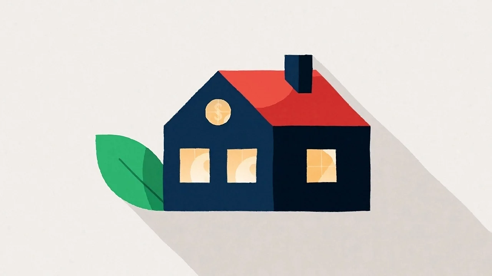

Ocieplenie domu to duży wydatek, ale spora jego część może wrócić do Twojej kieszeni. W 2026 roku dostępne są dwa główne mechanizmy wsparcia: program „Czyste Powietrze" oraz ulga termomodernizacyjna. Poniżej wyjaśniamy, kto może z nich skorzystać i jak to zrobić.
Program „Czyste Powietrze"
To rządowy program skierowany do właścicieli i współwłaścicieli domów jednorodzinnych. Dofinansowuje wymianę źródła ciepła oraz prace termomodernizacyjne, w tym ocieplenie ścian, poddasza i stropów. Wysokość wsparcia zależy od poziomu dochodów – w programie funkcjonują progi podstawowy, podwyższony i najwyższy, którym odpowiadają coraz wyższe kwoty i procent zwrotu.
W praktyce oznacza to, że część kosztów ocieplenia budynku może zostać pokryta bezzwrotną dotacją – tym większą, im niższy dochód gospodarstwa. Aktualne progi i maksymalne kwoty znajdziesz w regulaminie programu.
Ulga termomodernizacyjna
To odliczenie od podatku dostępne dla właścicieli domów jednorodzinnych. Pozwala odliczyć od dochodu wydatki na termomodernizację – w tym ocieplenie – do ustawowego limitu na podatnika. Rozliczenia dokonujesz w rocznym zeznaniu PIT na podstawie faktur.
- dotyczy budynków już istniejących (nie nowo budowanych),
- przedsięwzięcie należy zakończyć w określonym czasie,
- podstawą są faktury od wykonawcy – dlatego zawsze wystawiamy fakturę za wykonane ocieplenie.
Czy można łączyć dotację z ulgą?
Co do zasady tak, ale z jednym zastrzeżeniem: nie odliczysz w uldze tych wydatków, które pokryła już dotacja. Odliczeniu podlega tylko część sfinansowana z własnych środków. Aby dobrze rozplanować finansowanie, warto skonsultować się z księgowym lub doradcą energetycznym.
Jak uzyskać dotację krok po kroku
- Sprawdź, czy się kwalifikujesz – rodzaj budynku i próg dochodowy.
- Zamów wycenę i zakres prac – dokładny kosztorys ułatwia wypełnienie wniosku. Wycenimy ocieplenie bezpłatnie.
- Złóż wniosek przez portal programu (lub z pomocą punktu doradczego).
- Zrealizuj prace – wykonujemy ocieplenie zgodnie z ustalonym zakresem.
- Rozlicz dotację i/lub ulgę na podstawie faktur.
Planujesz ocieplenie z dotacją?
Przygotujemy wycenę i zakres prac, które ułatwią Ci złożenie wniosku. Bezpłatnie i bez zobowiązań.
Zamów bezpłatną wycenę →